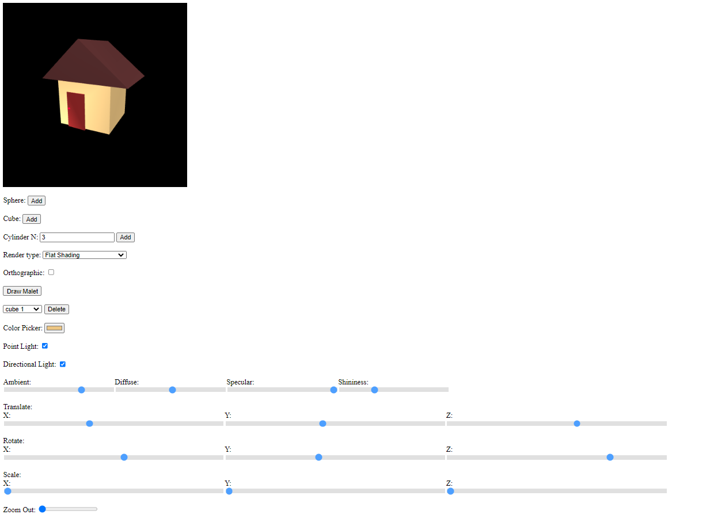

Cameron Taylor cachtayl
Program4 5/23/21
Instructions
1.) Read this page
2.) Click on source hyperlink(at bottom of page)
3.) Click on driver.html
4.) Enjoy!
Purpose:
This project can render customizable cylinders,
cubes, and spheres in real time. The user's abilities range from assigning object's
RGB color, changing between rendering modes, toggling lights in the scene, being
able to manipulate the objects with translating, rotating, and scaling
in the xyz axes, moving the camera, and choosing what kind of projection.
Note: X axis is horizontal, Y axis is vertical, Z axis is forwards/away
Screenshot

User Guide:
-Sphere Add button: puts a sphere into the Scene
-Cube Add button: puts a cube into the Scene
-N text box: to specify the amount of sides you want your cylinder to be
-Press the Add button to create a cylinder with N: #sides
-Render Type Selctor Box: choose between three commonly used rendering modes, Wireframe,
Flat shading, and Smooth Gourade shading.
-Orthographic Checkbox- if checked the camera will be using orthographic projection
if not checked it will be using perspective projection.
-Draw Malet button: Used to put a pre-made Malet into the scene
-Drop Down menu: Used to select which cylinder you want to customize
-Delete button: press to delete the object selected in the drop down menu
-Color Picker: can assign any color to the cylinder currently selected
-Point light Checkbox: One can toggle on and off a Point light at position (1.0, 1.0, -1.0)
-Directional Light checkbox: One can toggle on and off a Directional light
with Vector [1.0, 3.0, -3.0]
-Ambient Slider: general lighting
-Diffuse Slider: scattered lighting
-Specular Slider: surface reflectance
-Shininess Slider: affects the shininess of surface
-Translate, Rotate, Scale sliders: can T.R.S the selected cylinder on any axis
-Zoom Out slider: One can zoom out of the scene
Keys:
W/S- Move camera forwards/backwards
A/D- Move camera left/right
Q/E- Pan camera left/right
Z/X- tilt Camera up/down
T- Camera spiraling Animation around thbe origin
Source